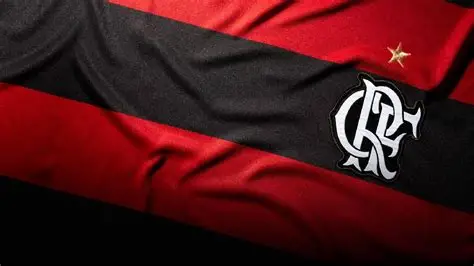

Dados básicos do clube
- Nome oficial: Clube de Regatas do Flamengo
- Cidade: Rio de Janeiro (RJ)
- Fundação: 15 de novembro de 1895
- Modalidade de origem: remo
- Cores: vermelho e preto
- Mascote: urubu
- Torcida: conhecida como Nação Rubro-Negra
O CRF é um clube esportivo da cidade do Rio de Janeiro. Foi fundado em 15 de novembro de 1895, como clube de remo, e ao longo do século XX tornou-se conhecido principalmente pelo futebol.
Este trabalho acadêmico reúne informações sobre a história, as conquistas e a identidade do clube. O tema foi escolhido para praticar o uso de HTML semântico em um conteúdo real, com organização em páginas, tabela, formulário e mídia.

O clube surgiu ligado ao remo, na região do bairro do Flamengo. O departamento de futebol foi criado em 1911 e, nas décadas seguintes, o clube ganhou grande popularidade. Entre as conquistas mais lembradas estão a Copa Libertadores e a Copa Intercontinental de 1981. A página História aprofunda esse percurso.
O Flamengo começou como clube de remo, e a palavra "Regatas" no nome do clube lembra essa origem.
O hino do clube foi composto por Lamartine Babo, compositor brasileiro que também escreveu hinos de outros clubes cariocas.